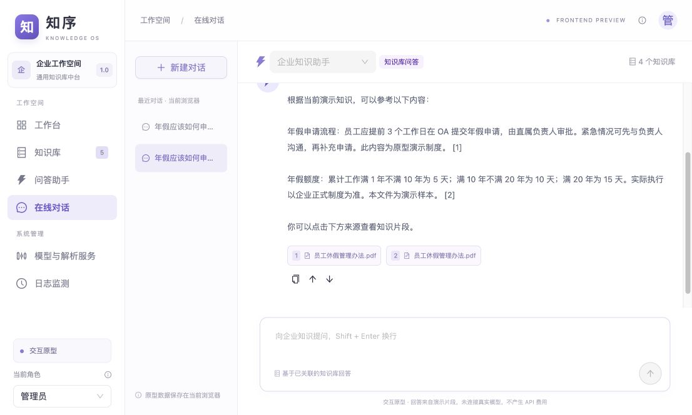
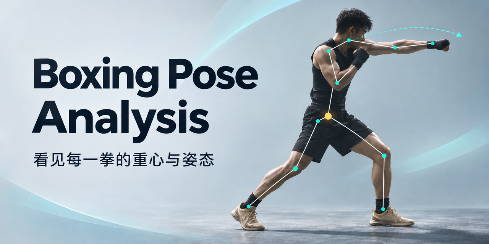
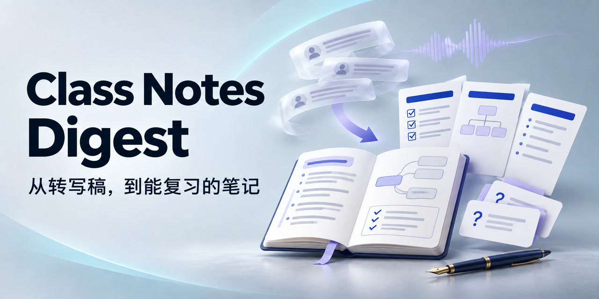

知序 · 企业知识库
一个管理企业文档并提供带来源引用的 AI 问答的网站，可在本机或内网部署试用。
AI 产品经理 · 张健航
关注真实需求，也愿意走进未知。
我用产品实践探索 AI 的可能，把想法做成能体验、能验证、能继续改进的作品。

真实项目界面 · 点击查看详情
SELECTED WORK / 01—08
从 AI 工具到个人探索，
每个项目都有自己的问题与尝试。
8 个项目
一个管理企业文档并提供带来源引用的 AI 问答的网站，可在本机或内网部署试用。
一套面向非技术产品经理的中文开发手册、PRD 模板与验收脚本，用六个阶段组织 AI 编码工具的工作。
一个汇总国内外主流大模型的网站，可集中查看模型介绍、功能特点、榜单资料、价格和使用额度。

一个基于 OpenMausBot 修改的个人 AI Agent 桌面版，支持连接模型、协作处理任务，并使用六款 Fat 主题头像。

一款用 AI 辅助制作游戏的桌面软件，输入玩法描述后，可辅助生成代码和素材，并在软件内试玩。

一个分析手机训练视频的 Python 工具，可提取二维骨架、估算身体重心、检测出拳，并生成慢放标注视频。

一个把课堂转写稿或群聊整理为结构化笔记的 Skill，提供标准纪要和考试复习两种输出方式。

一个展示个人背景、产品思考与八个公开项目的作品网站，支持独立项目介绍和交互演示。
ABOUT ME
一个愿意把问题问清楚，
也愿意亲手试一试的 AI 产品经理。
计算机应用技术的学习背景，让我习惯把产品想法拆成具体流程，再用原型和真实反馈验证。从知识库、桌面 Agent 到游戏创作，我关心 AI 能在哪一步帮上忙，以及人应该在哪一步保留判断。

HOW I WORK
在不确定中，交付值得信任的体验。
先走近具体的人和场景，把真正需要解决的问题说清楚。
把可重复的工作交给工具，在目标、边界和验收上保持主动。
先做出能体验的一小步，再依据真实使用与证据继续调整。
LET'S CONNECT
欢迎从作品出发，聊聊 AI 产品、想法与新的可能。